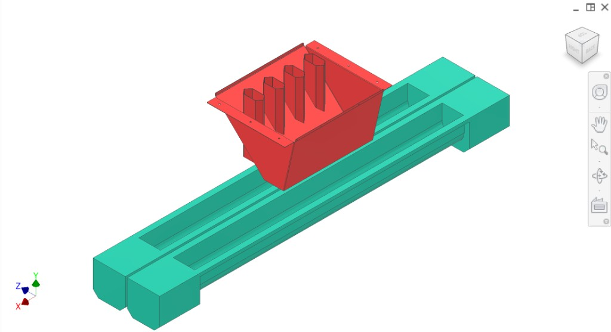
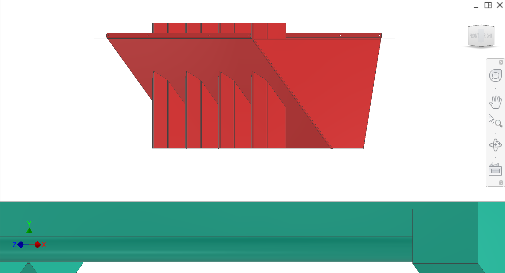
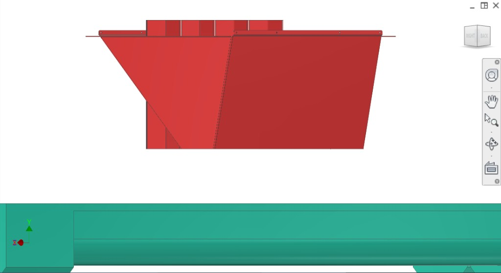
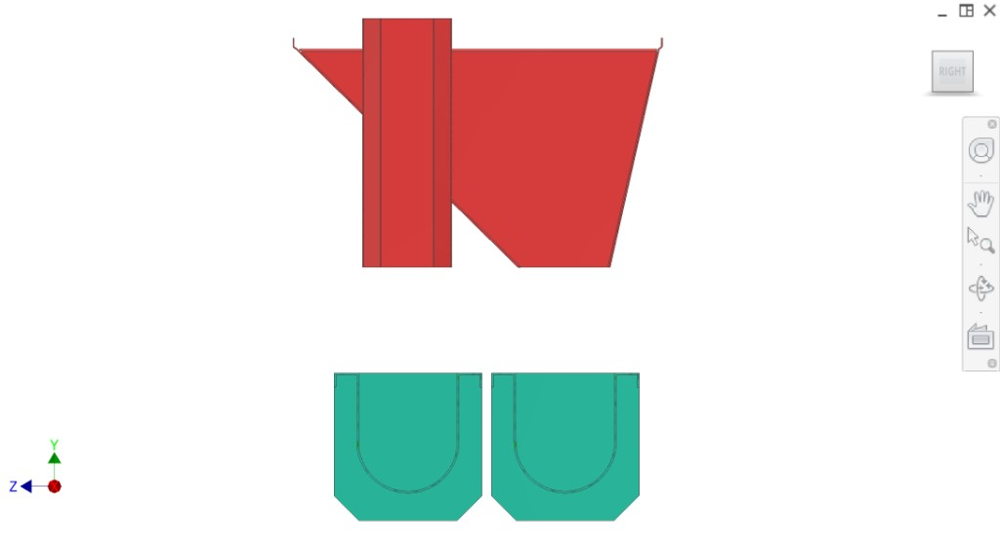
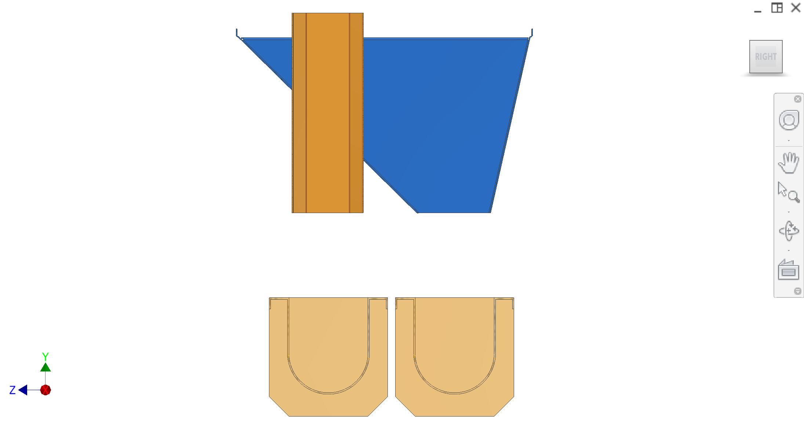
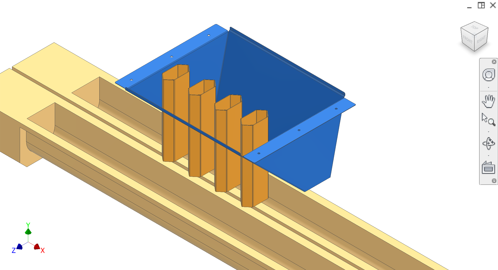
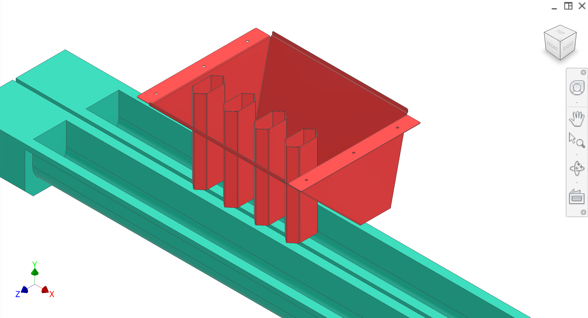

Disposal routes peels and cores into separate conveyance paths. After core ejection, cores fall into core chutes (hexagonal-tube concept beneath each peeler station) while peel material flows around the core chutes into the peel chute. Two augers convey peels vs. cores separately to support different downstream handling (e.g., secondary wash/juice extraction for cores).
颜色说明 & components
Peel chute, core chutes, augers — detail pages TBD. Some CAD views use alternative colours (second row).
Colour(s)
Component
Peel chute — folded sheet metal; peels from sides of peelers
—
Core chutes — welded to peel chute; cores after core ejection
Two augers — take peels and cores away separately
图示
CAD views. Refer to figures in the text as Figure 1, Figure 2, etc.







Figure 1. Top-down isometric — red chute on teal base, two channels.
1 / 9
建议补充图示（便于承包商理解）
Add figure: Peel vs core separation — plan view streamlines at hex chute array.
Add figure: Auger infeed transition — chute-to-auger for peel and core lines separately.
Core from core ejectionfalls into the core chutes directly below each peeler station.
Peels leave the peeler station and flow around the core chutes via chute geometry (hexagonal tubes with triangular leading/trailing faces), preventing peels from entering the core chute stream.
Two augers convey peels and cores away separately.
Interfaces
Input (cores): From core ejection — core falls into core chute.
Input (peels): From collection/extraction — peels to sides of peelers, two channels.
Output: Two augers convey peels and plugs/cores away separately.
接口与公差
Known interfaces and tolerances. Links go to related subsystems.
Part
Interface / tolerance
Related
Core chutes
Receive cores from core ejection; welded to peel chute